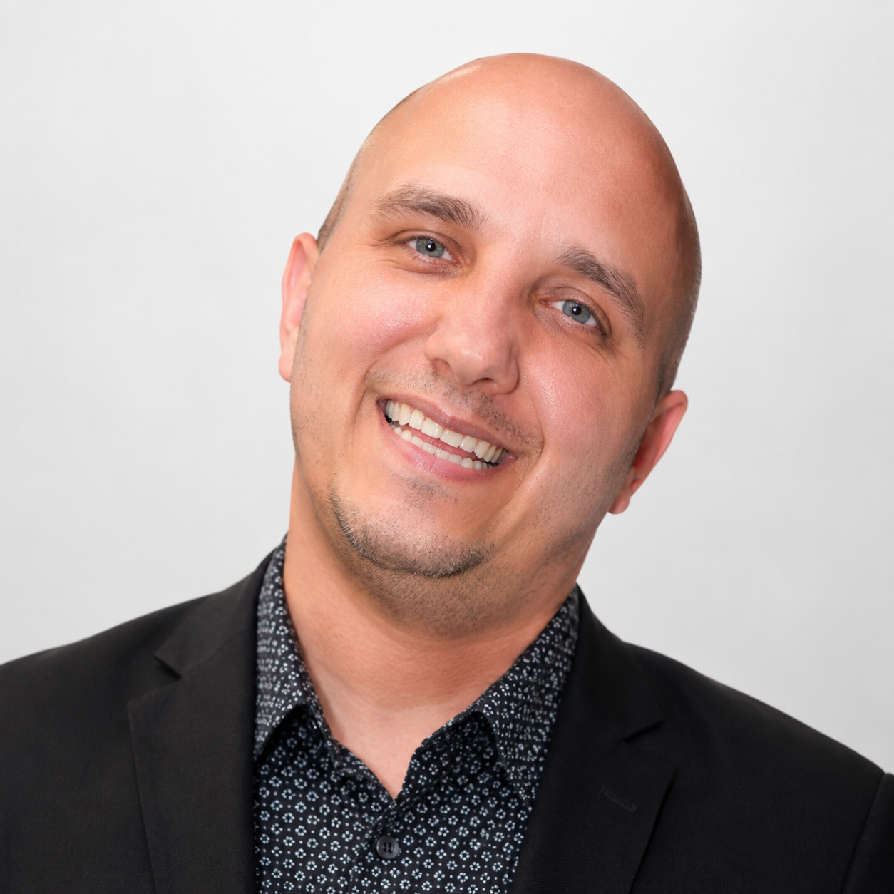
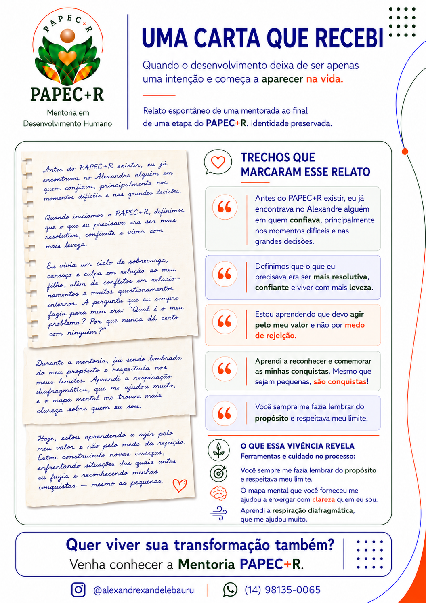
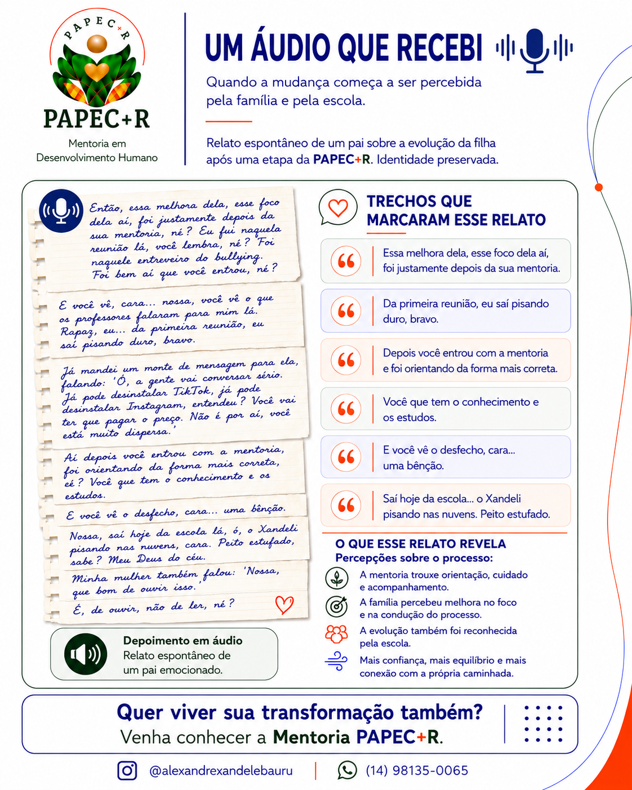

🎙
Palestras
Encontros com conteúdo provocativo, reflexão, consciência e direcionamento prático.
- Empresas, escolas, projetos e eventos
- Conteúdo adaptado ao público
- Experiência dinâmica e aplicável
O Método PAPEC+R é um caminho de desenvolvimento humano com propósito, consciência, direção e ação.
Criador do Método PAPEC+R

O PAPEC+R organiza o desenvolvimento em etapas claras, permitindo compreender o momento atual, definir direção, agir, checar e reconhecer a evolução.
Propósito e Recompensa marcam início e reconhecimento. Análise, Planejamento, Execução e Checagem formam o ciclo de desenvolvimento.
A mentoria não promete mágica. Ela oferece método e acompanhamento para quem deseja se desenvolver de verdade.
O método pode ser apresentado para grupos ou aplicado de forma individual em uma jornada de desenvolvimento.
Encontros com conteúdo provocativo, reflexão, consciência e direcionamento prático.
Processo estruturado de desenvolvimento humano, com escuta, ferramentas e acompanhamento direcionado ao propósito de cada mentorado.
Cada jornada é única. O método pode ser direcionado conforme o propósito, o momento e a necessidade de cada pessoa.
Compreender emoções, reações e padrões para fazer escolhas mais conscientes.
Compreender o outro, fortalecer vínculos e desenvolver uma comunicação mais consciente.
Lidar melhor com mudanças, desafios e situações inesperadas com mais leveza e flexibilidade.
Definir objetivos, organizar prioridades e transformar intenção em ação.
Olhar para experiências vividas com novos significados e seguir com mais leveza e propósito.
Relatos reais sobre desenvolvimento, clareza, direção e transformação durante a caminhada.
“Tenho me sentido mais resolutiva, confiante e leve.”
A mentoria tem me ajudado a olhar para as minhas emoções com mais clareza, entender melhor minhas reações e desenvolver confiança para tomar decisões e me posicionar com mais segurança.
“Hoje consigo viver com mais leveza e equilíbrio.”
Passei a entender melhor minhas emoções, reconhecer padrões da minha história e perceber responsabilidades que eu carregava sem necessidade.
“A mentoria me ajudou a transformar intenção em ação.”
Aprendi a organizar melhor minhas prioridades, delegar responsabilidades, estabelecer limites e concluir aquilo que começo.
“Essa melhora dela, esse foco dela, foi justamente depois da sua mentoria.”
Relato espontâneo de um pai ao perceber mudanças na filha, também reconhecidas pela escola ao longo do processo.

Um relato sobre propósito, limites, confiança, rejeição e reconhecimento das próprias conquistas.

Um relato espontâneo de um pai sobre mudanças percebidas pela família e também pela escola.
Alexandre desenvolveu o Método PAPEC+R a partir da integração entre desenvolvimento humano, escuta, método e acompanhamento. Sua trajetória reúne experiências em neurociência, tecnologia, gestão, PNL, hipnose na prática clínica e projetos de impacto humano.
O foco não é oferecer respostas prontas, mas criar um caminho estruturado para que cada pessoa compreenda melhor seus padrões, reconheça seus recursos e transforme intenção em movimento.
Antes de decidir se deseja continuar, você pode conhecer as duas primeiras etapas do método e receber um Mapa de Perfil Comportamental.
Inclui o Mapa de Perfil Comportamental. Depois dessa fase, você decide se deseja seguir.
Quero conhecer a fase inicial